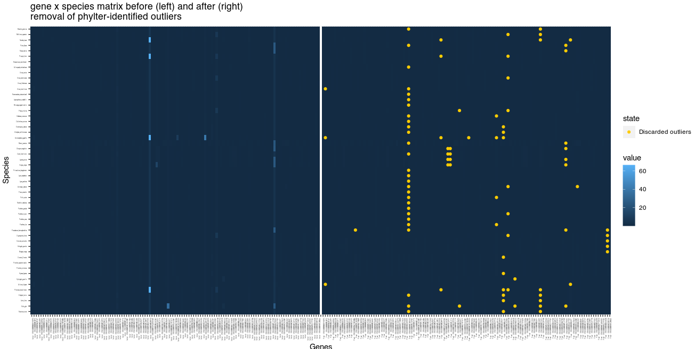

Installation
phylter is not yet on CRAN (deposit in
process). To install the development version:
- Install the release version of
remotesfrom CRAN:
install.packages("remotes")- Install the development version of
phylterfrom GitHub:
remotes::install_github("damiendevienne/phylter")- Once installed, the package can be loaded:
library("phylter")Note that phylter requires R version > 4.0, otherwise
it cannot be installed. Also, R uses the GNU Scientific Library. On
Ubuntu, this can be installed prior to the installation of the
phylter package by typing
sudo apt install libgsl-dev in a terminal.
Quick start
Here is a brief introduction to the use phylter on a
collection of gene trees. To better understand how phylter
really works, go to the section entitled How phylter works. To see its usage on a
small biological dataset and view the different outputs of the tool, go
to Example section. A full list of functions in
the phylter package is here.
1. With the read.tree function from the
ape package, read trees from external file and save as a
list called trees.
if (!requireNamespace("ape", quietly = TRUE))
install.packages("ape")
trees <- ape::read.tree("treefile.tre")2. (optional) Read or get gene names somewhere (same
order as the trees) and save it as a vector called
names.
3. Run phylter on your trees (see
details below for possible options).
results <- phylter(trees, gene.names = names)The phylter() function is called as follows by
default:
phylter(X, bvalue = 0, distance = "patristic", k = 3, k2 = k, Norm = "median",
Norm.cutoff = 0.001, gene.names = NULL, test.island = TRUE,
verbose = TRUE, stop.criteria = 1e-5, InitialOnly = FALSE,
normalizeby = "row", parallel = TRUE)Arguments are as follows:
-
X: A list of phylogenetic trees (phylo object) or a list of distance matrices. Trees can have different number of leaves and matrices can have different dimensions. If this is the case, missing values are imputed. -
bvalue: IfXis a list of trees, nodes with a support belowbvaluewill be collapsed prior to the outlier detection. -
distance: IfXis a list of trees, type of distance used to compute the pairwise matrices for each tree. Can be “patristic” (sum of branch lengths separating tips, the default) or “nodal” (number of nodes separating tips). -
k: Strength of outlier detection. The higher this value the less outliers detected. -
k2: Same askfor complete gene outlier detection. To preserve complete genes from being discarded,k2can be increased. By default,k2 = k. -
Norm: Should the matrices be normalized prior to the complete analysis and how. If “median”, matrices are divided by their median; if “mean”, they are divided by their mean; if “none”, no normalization if performed. Normalizing ensures that fast-evolving (and slow-evolving) genes are not treated as outliers. Normalization by median is a better choice as it is less sensitive to outlier values. -
Norm.cutoff: Value of the median (ifNorm = "median") or the mean (ifNorm = "mean") below which matrices are simply discarded from the analysis. This prevents dividing by 0, and allows getting rid of genes that contain mostly branches of length 0 and are therefore uninformative anyway. Discarded genes, if any, are listed in the output (out$DiscardedGenes). -
gene.names: List of gene names used to rename elements inX. If NULL (the default), elements are named 1,2,…,length(X). -
test.island: IfTRUE(the default), only the highest value in an island of outliers is considered an outlier. This prevents non-outliers hitchhiked by outliers to be considered outliers themselves. -
verbose: IfTRUE(the default), messages are written during the filtering process to get information on what is happening. -
stop.criteria: The optimization stops when the gain (quality of compromise) between round n and round n+1 is smaller than this value. Default to 1e-5. -
InitialOnly: Logical. IfTRUE, only the Initial state of the data is computed. -
normalizeby: Should the gene \(\times\) species matrix be normalized prior to outlier detection, and how. -
parallel: Logical. Should the computations be parallelized when possible? Default toTRUE. Note that the number of threads cannot be set by the user whenparallel = TRUE. It uses all available cores on the machine.
4. Analyze the results.
You can get a list of outliers by simply typing:
results$Final$OutliersIn addition, many functions allow looking at the outliers detected and comparing before and after phyltering. All these functions are detailed in the Example section.
# Get a summary: nb of outliers, gain in concordance, etc.
summary(results)
# Show the number of species in each gene, and how many per gene are outliers
plot(results, "genes")
# Show the number of genes where each species is found, and how many are outliers
plot(results, "species")
# Compare before and after genes $\times$ species matrices, highlighting missing data and outliers
# identified (not efficient for large datasets)
plot2WR(results)
# Plot the dispersion of data before and after outlier removal. One dot represents one
# gene $\times$ species association
plotDispersion(results)
# Plot the genes $\times$ genes matrix showing pairwise correlation between genes
plotRV(results)
# Plot optimization scores during optimization
plotopti(results) 5. Save the results of the analysis to an external
file, for example to perform cleaning on raw alignments based on the
results from phylter.
write.phylter(results, file = "phylter.out")How phylter works
The phylter method, in its entirety, is depicted in Figure 1. It starts with K distance matrices
obtained from K orthologous genes families by either computing pairwise
distances (sum of branch lengths) between species in each gene family
tree, or directly from each gene family multiple sequence alignment
(MSA). All the matrices are given the same dimensionality, using the
mean values to impute missing data if any, and are then normalised by
dividing each matrix by its median or its mean value (default is
median). The normalisation by median prevents genes from fast- (resp.
slow-) evolving orthologous gene families to be erroneously considered
outliers, and is a better choice than a normalisation by the mean as it
is less affected by outlier values.
Figure 1.
Principle of the phylter method for identifying outliers in phylogenomic
datasets. The method relies on DISTATIS (grey block), an extension of
multidimensional scaling to three dimensions.

From the K matrices obtained, an incremental process starts,
consisting in three main steps (1) comparison of the matrices with the
DISTATIS method (Abdi et al. 2005; Abdi et al. 2012), (2) detection of
gene outliers, and (3) evaluation of the impact of removing these gene
outliers on the overall concordance between the matrices. Note that we
refer to gene outliers as single genes in single species that do not
follow the general trend, while outlier gene families refer to sets of
orthologous genes for a group of species (also referred to as gene
trees) that do not agree with the other gene families. These steps are
repeated until no more gene outlier is detected, or until the removal of
the identified gene outliers does not increase the concordance between
the matrices more than a certain amount specified by the user. Before
finishing the optimization, phylter performs a last action
consisting in checking whether some outlier gene families still exist
despite the removal of outlier genes already performed. These outlier
gene families correspond to gene families whose lack of correlation with
others is not due to a few outliers but are globally not following the
trend. If outlier gene families are discarded there, the optimization
restarts as it may have unblocked the detection of other gene
outliers.
Example
Running phylter
A carnivora dataset (small subset from Allio et
al. 2021) comprised of 125 gene families for 53 species (53 \(\times\) 125 = 6625 genes in total) is
included in the package. To load it and test phylter on
it:
Exploring the results
Summary
Typing summary(results) gives the following
information:
summary(results)##
## Total number of outliers detected: 94
## Number of complete gene outliers : 0
## Number of complete species outliers : 0
##
## Gain (concordance between matrices): 8.19%
## Loss (data filtering): 1.42%We see that with default parameters on the small
carnivora dataset, 94 gene outliers were
identified. No complete gene outliers (or outlier gene
families) were detected, meaning that there are no gene families
totally uncorrelated with the rest. There is also no complete species
outliers, i.e. species whose position is very variable in the different
gene trees (those are often called rogue taxa).
Detailed output
The variable called results is a large object (a list)
of class phylter.
It is divided into two subgroups (lists) defining the
Initial (results$Initial) and the Final
(results$Final) states for all the objects manipulated by
phylter (see Figure 1).
You can view the content of these lists and the description of each object it contains, like this:
results$Initial## Phylter Analysis - initial state
## List of class phylterinitial
##
## Object Dimension Content
## 1 $mat.data 125 List of original distance matrices, one per gene
## 2 $WR 53 x 125 Species x Genes reference matrix
## 3 $RV 125 x 125 Genes x Genes RV correlation coefficients matrix
## 4 $weights 125 Weight of each gene in the compromise
## 5 $compromise 53 x 53 Species x Species compromise matrix
## 6 $F 53 x 6 Distatis coordinates of compromise
## 7 $matrices 125 Distatis coordinates of gene matrices (list)
## 8 $PartialF 125 Species x Species gene matrices (list)
results$Final## Phylter Analysis - final state
## List of class phylterfinal
##
## Object Dimension
## 1 $WR 53 x 125
## 2 $RV 125 x 125
## 3 $weights 125
## 4 $compromise 53 x 53
## 5 $F 53 x 8
## 6 $PartialF 125
## 7 $species.order 53
## 8 $AllOptiScores 11
## 9 $CELLSREMOVED 94 x 2
## 10 $Outliers 94 x 2
## 11 $CompleteOutliers 2
## 12 $matrices 125
## Content
## 1 Species x Genes reference matrix
## 2 Genes x Genes RV correlation coefficients matrix
## 3 Weight of each gene in the compromise
## 4 Species x Species compromise matrix
## 5 Distatis coordinates of compromise
## 6 Distatis coordinates of gene matrices (list)
## 7 Name and order of species
## 8 Evolution of quality of compromise (11 steps)
## 9 Index of cells removed (may contain imputed cells)
## 10 Outliers detected (one row = one outlier cell)
## 11 Complete outliers (Gene and Species, if any)
## 12 Species x Species gene matrices (list)As an example, you can access to the initial distance matrices by
typing results$Initial$mat.data or to the weights
associated to each gene by typing results$Initial$weights
(see Figure 1).
Maybe more interesting is to get access to the list of
outliers identified by phylter. As we can see
above, this is done by typing results$Final$Outliers. This
prints a matrix with two columns (extract below). Each row is an
outlier. The first column represents the gene family were the outlier
was found and the second column is the species identified as outlier in
this gene family.
results$Final$Outliers## [,1] [,2]
## [1,] "ENSG00000005381_MPO" "Arctocephalus_gazella"
## [2,] "ENSG00000005381_MPO" "Ursus_maritimus"
## [3,] "ENSG00000005381_MPO" "Ailurus_fulgens"
## [4,] "ENSG00000106511_MEOX2" "Panthera_tigris"
## [5,] "ENSG00000106511_MEOX2" "Mustela_putorius"
## [6,] "ENSG00000114686_MRPL3" "Procyon_lotor"
## [7,] "ENSG00000116157_GPX7" "Vulpes_vulpes"
## [8,] "ENSG00000116761_CTH" "Otocyon_megalotis"
## [9,] "ENSG00000120053_GOT1" "Phoca_vitulina"
## [10,] "ENSG00000120053_GOT1" "Gulo_gulo"
## [11,] "ENSG00000123307_NEUROD4" "Arctocephalus_gazella"
## [12,] "ENSG00000132254_ARFIP2" "Panthera_leo"
## [13,] "ENSG00000132254_ARFIP2" "Odobenus_rosmarus"
## [14,] "ENSG00000132254_ARFIP2" "Felis_catus"
## [15,] "ENSG00000132254_ARFIP2" "Arctocephalus_gazella"
## [16,] "ENSG00000132693_CRP" "Hyaena_hyaena"
## [17,] "ENSG00000132693_CRP" "Pteronura_brasiliensis"
## [18,] "ENSG00000132693_CRP" "Neovison_vison"
## [19,] "ENSG00000132693_CRP" "Eumetopias_jubatus"
## [20,] "ENSG00000133135_RNF128" "Cryptoprocta_ferox"
## [21,] "ENSG00000133135_RNF128" "Panthera_tigris"
## [22,] "ENSG00000133135_RNF128" "Phoca_vitulina"
## [23,] "ENSG00000134240_HMGCS2" "Gulo_gulo"
## [24,] "ENSG00000134240_HMGCS2" "Spilogale_gracilis"
## [25,] "ENSG00000138675_FGF5" "Taxidea_taxus"
## [26,] "ENSG00000138675_FGF5" "Lutra_lutra"
## [27,] "ENSG00000143125_PROK1" "Potos_flavus"
## [28,] "ENSG00000149573_MPZL2" "Paradoxurus_hermaphroditus"
## [29,] "ENSG00000073111_MCM2" "Paradoxurus_hermaphroditus"
## [30,] "ENSG00000106511_MEOX2" "Manis_javanica"
## [31,] "ENSG00000106511_MEOX2" "Acinonyx_jubatus"
## [32,] "ENSG00000106511_MEOX2" "Panthera_pardus"
## [33,] "ENSG00000106511_MEOX2" "Leptonychotes_weddellii"
## [34,] "ENSG00000114686_MRPL3" "Arctocephalus_gazella"
## [35,] "ENSG00000116157_GPX7" "Canis_familiaris"
## [36,] "ENSG00000116157_GPX7" "Otocyon_megalotis"
## [37,] "ENSG00000116761_CTH" "Vulpes_vulpes"
## [38,] "ENSG00000132693_CRP" "Enhydra_lutris"
## [39,] "ENSG00000132693_CRP" "Crocuta_Crocuta"
## [40,] "ENSG00000132693_CRP" "Arctocephalus_gazella"
## [41,] "ENSG00000132693_CRP" "Zalophus_californianus"
## [42,] "ENSG00000133135_RNF128" "Ursus_americanus"
## [43,] "ENSG00000138675_FGF5" "Mustela_putorius"
## [44,] "ENSG00000138675_FGF5" "Mellivora_capensis"
## [45,] "ENSG00000143125_PROK1" "Paradoxurus_hermaphroditus"
## [46,] "ENSG00000149573_MPZL2" "Mungos_mungo"
## [47,] "ENSG00000106511_MEOX2" "Panthera_onca"
## [48,] "ENSG00000106511_MEOX2" "Felis_catus"
## [49,] "ENSG00000106511_MEOX2" "Enhydra_lutris"
## [50,] "ENSG00000106511_MEOX2" "Ailuropoda_melanoleuca"
## [51,] "ENSG00000106511_MEOX2" "Odobenus_rosmarus"
## [52,] "ENSG00000106511_MEOX2" "Paradoxurus_hermaphroditus"
## [53,] "ENSG00000106511_MEOX2" "Neofelis_nebulosa"
## [54,] "ENSG00000114686_MRPL3" "Taxidea_taxus"
## [55,] "ENSG00000116157_GPX7" "Lycaon_pictus"
## [56,] "ENSG00000132693_CRP" "Lutra_lutra"
## [57,] "ENSG00000133135_RNF128" "Procyon_lotor"
## [58,] "ENSG00000138675_FGF5" "Enhydra_lutris"
## [59,] "ENSG00000143125_PROK1" "Nasua_narica"
## [60,] "ENSG00000144355_DLX1" "Acinonyx_jubatus"
## [61,] "ENSG00000149573_MPZL2" "Suricata_suricatta"
## [62,] "ENSG00000149573_MPZL2" "Helogale_parvula"
## [63,] "ENSG00000106511_MEOX2" "Lynx_pardinus"
## [64,] "ENSG00000106511_MEOX2" "Gulo_gulo"
## [65,] "ENSG00000106511_MEOX2" "Ursus_maritimus"
## [66,] "ENSG00000106511_MEOX2" "Eumetopias_jubatus"
## [67,] "ENSG00000106511_MEOX2" "Neomonachus_schauinslandi"
## [68,] "ENSG00000106511_MEOX2" "Potos_flavus"
## [69,] "ENSG00000106511_MEOX2" "Panthera_leo"
## [70,] "ENSG00000106511_MEOX2" "Prionailurus_bengalensis"
## [71,] "ENSG00000106511_MEOX2" "Canis_familiaris"
## [72,] "ENSG00000106511_MEOX2" "Neovison_vison"
## [73,] "ENSG00000114686_MRPL3" "Pteronura_brasiliensis"
## [74,] "ENSG00000116761_CTH" "Canis_familiaris"
## [75,] "ENSG00000133135_RNF128" "Mellivora_capensis"
## [76,] "ENSG00000133135_RNF128" "Acinonyx_jubatus"
## [77,] "ENSG00000138675_FGF5" "Gulo_gulo"
## [78,] "ENSG00000138675_FGF5" "Neovison_vison"
## [79,] "ENSG00000143125_PROK1" "Gulo_gulo"
## [80,] "ENSG00000149573_MPZL2" "Cryptoprocta_ferox"
## [81,] "ENSG00000106511_MEOX2" "Lynx_canadensis"
## [82,] "ENSG00000106511_MEOX2" "Zalophus_californianus"
## [83,] "ENSG00000106511_MEOX2" "Mirounga_angustirostris"
## [84,] "ENSG00000133135_RNF128" "Pteronura_brasiliensis"
## [85,] "ENSG00000143125_PROK1" "Otocyon_megalotis"
## [86,] "ENSG00000106511_MEOX2" "Puma_concolor"
## [87,] "ENSG00000106511_MEOX2" "Callorhinus_ursinus"
## [88,] "ENSG00000143125_PROK1" "Vulpes_vulpes"
## [89,] "ENSG00000143196_DPT" "Ailurus_fulgens"
## [90,] "ENSG00000138675_FGF5" "Pteronura_brasiliensis"
## [91,] "ENSG00000143125_PROK1" "Lycaon_pictus"
## [92,] "ENSG00000143125_PROK1" "Manis_javanica"
## [93,] "ENSG00000116761_CTH" "Lycaon_pictus"
## [94,] "ENSG00000143196_DPT" "Taxidea_taxus"All the informations present in these different objects returned by
phylter can be difficult to fully understand and to easily
use for other steps of bioinformatics pipelines. For this reason,
multiple functions are proposed to either visualize the results or write
the results in formatted output files that can be used elsewhere. These
are detailed in the next sections.
Visualize the correlation between gene families (the RV matrix)
before and after phylter
As shown in Figure 1, at each step of the
iterative process, phylter computes a matrix (called RV)
containing the correlation coefficients between individual gene
matrices. This RV matrix thus gives information on the overall
congruence between each gene family and the others. With
phylter, we can visualize this matrix before
(plotRV(results, what = "Initial")) and after
(plotRV(results, what = "Final")) the detection and removal
of the outliers. The two matrices are displayed below. It clearly
appears that the removal of outliers identified by phylter
increased the overall concordance between the gene matrices by removing
the few genes that were causing this loss of concordance.
Visualize the 2-way reference matrix from which outliers are detected
The 2WR matrix (see Figure 1) is the
species \(\times\) genes matrix
computed at each loop of the phylter iterative process,
from which outliers are detected. A large value in one cell of this
matrix (light blue cells in the following figure) refers to one species
in one gene tree whose position is not in accordance with its position
in the other gene trees. The two 2WR matrices below represent the 2WR
matrix before (left) and after (right) using phylter. In
yellow, we see the outliers that phylter identified and
discarded during the process. We observe that the cells with high values
on the left matrix were those identified as outliers by
phylter, which is expected. The fact that some cells on the
left matrix do not seem so different from the others but are still
identified as outlirs by phylter is because the process is
iterative and these less-obvious outliers were maybe more obvious after
having discarded a first set of outliers. This figure is obtained by
typing plot2WR(results).

Visualize the distribution of outliers
Typing plot(results, "genes") allows exploring the
number of outliers identified by phylter for each gene.
Here is how it looks for the example dataset:

We observe that a few gene families have a lot of outliers, while others have none. One gene family has even almost half of its leaves (species) discarded.
Typing plot(results, "species") allows exploring the
number of genes for which each species was identified as outlier.
Here we see that no species is particularly problematic. Almost each species is an outlier in at least one gene family.
Visualize the effect of phylter in terms of data
dispersion
Removing outliers in a dataset can be seen as a way of decreasing the
dispersion of data if they were to be represented on a 2D map.
With phylter, this can be easily viewed. For each species,
we can compute the distance, in the compromise space (see Figure 1), between its position in a given gene
tree and its reference position. This can be done along the x
and the y axes for example, and be compared before and after
the use of phylter. This is what is represented hereafter.
We observe a sharp decrease of the dispersal of the points after having
employed phylter on the dataset.
This figure is obtained by simply typing
plotDispersion(results).
Visualize the evolution of the quality score of the compromise matrix
At each step of the iterative process of phylter (Figure 1), a quality score is computed
describing how much individual gene matrices are correlated. This score
increases when outliers are removed, and the gain in quality achieved by
removing the outliers at each step is one of the criteria for stopping
the overall iterative process. The evolution of this score can be
visualized with phylter by typing
plotopti(results). The output is given below.

We see that on this dataset, phylter performed 11 steps
before stopping.
Writing the output
phylter can write two types of output files:
- a pdf report, containing a summary of the results
along with all the figures presented above. To get the pdf report,
simply type
write.phylter(results, pdfreport = TRUE). This will generate a file calledreport.pdf. An example of such a file can be can be seen here. - a text report with a summary of the
phylterrun performed and a formatted list of outliers. To get a text report, easy to parse and to use with other scripts in order (for instance) to clean the multiple sequence alignement or to prune outliers in gene trees, you just have to typewrite.phylter(results, file = "output.txt"). This will generate a file calledoutput.txtthat will ressemble this one.
If no file name is given, the report is written to the console. Such an example is given below.
write.phylter(results)References
Abdi, H., O’Toole, A.J., Valentin, D. & Edelman, B. (2005). DISTATIS: The Analysis of Multiple Distance Matrices. 2005 IEEE Computer Society Conference on Computer Vision and Pattern Recognition (CVPR’05) - Workshops. doi: 10.1109/CVPR.2005.445. https://www.utdallas.edu/~herve/abdi-distatis2005.pdf
Allio, R., Tilak, M.K., Scornavacca, C., Avenant, N.L., Kitchener, A.C., Corre, E., Nabholz, B. & Delsuc, F. (2021). High-quality carnivoran genomes from roadkill samples enable comparative species delineation in aardwolf and bat-eared fox. eLife, 10, e63167. doi: 10.7554/eLife.63167.
Hubert, M. and Vandervieren, E. (2008). An adjusted boxplot for skewed distributions. Computational Statistics and Data Analysis. doi: 10.1016/j.csda.2007.11.008.
de Vienne D.M., Ollier S. et Aguileta G. (2012). Phylo-MCOA: A Fast and Efficient Method to Detect Outlier Genes and Species in Phylogenomics Using Multiple Co-inertia Analysis. Molecular Biology and Evolution. doi: 10.1093/molbev/msr317 (This is the ancestor of phylter).
For comments, suggestions and bug reports, please open an issue on this GitHub repository.